Every picture is a screenshot of the app. The first design is built. The other four are directions that were tried and removed.
The cases: 10 baseball players with batting averages from .298 to .366, five cars with their miles per gallon, and an empty bar. Each case is shown horizontal and vertical.
What it is. Each value is a dot on the axis and a blue tab with white text. Part of the tab is on the white node and part hangs past its edge. On a horizontal bar the name is above the number. On a vertical bar they share one line.
Why. A filled tab shows on the white node and on the dark canvas. Name above number makes a horizontal tab narrow, so 10 values fit. Tabs move apart and never overlap. The shared unit is written once, at the end of the axis.
Trade-off. A horizontal bar with names and numbers is taller than before. Ten filled tabs are a lot of blue.
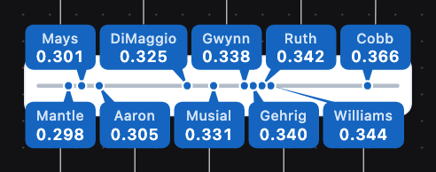
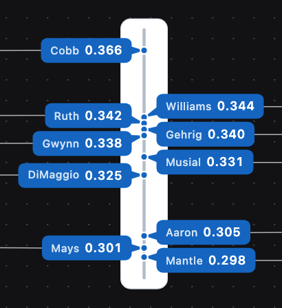
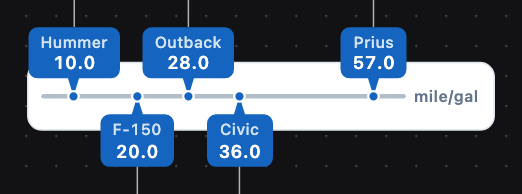
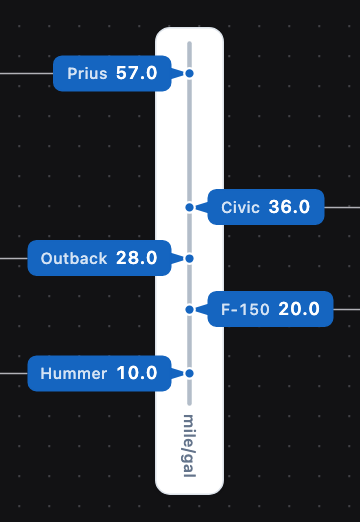
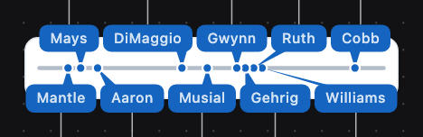
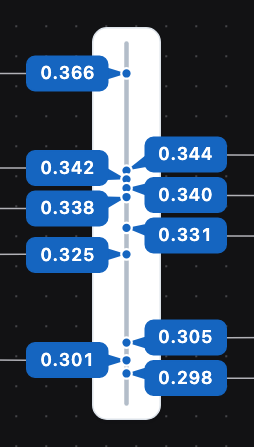
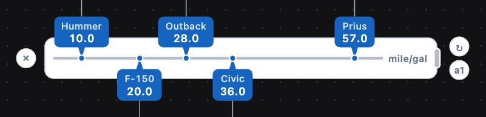
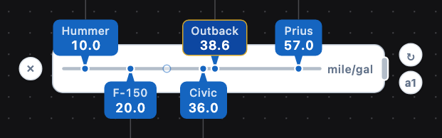
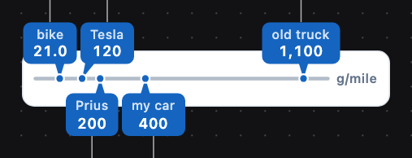
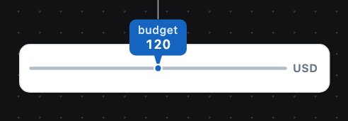
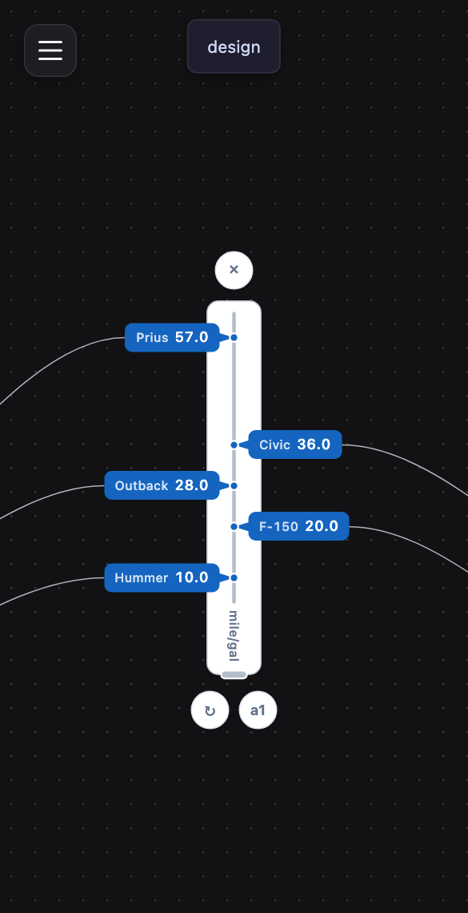
What it is. The same layout as design 1. The tabs are pale blue with a blue outline and blue numbers, like the number field of a value node.
Why. It is calmer, and it looks like the other nodes.
Trade-off. A tab has less contrast with the white node. A tab and its point do not read as one shape.
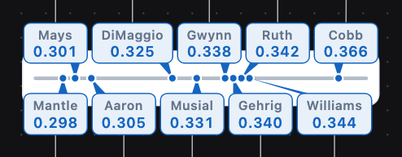
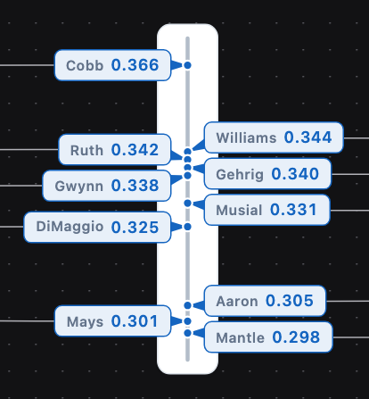
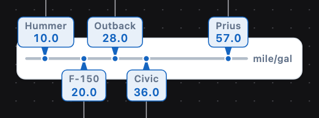
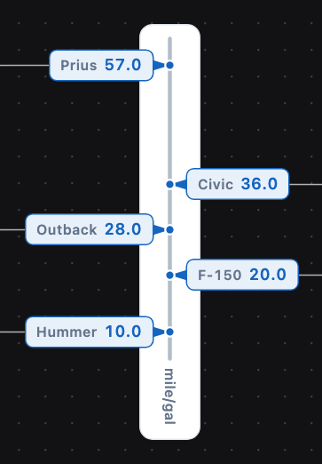
What it is. The node is a thin strip with the axis and the dots. The names and numbers are plain text on the canvas, joined to their dots by thin lines.
Why. It has the least ink. It looks like a labelled chart.
Trade-off. Nothing shows that the text can be dragged. The tabs that sit partly on the node are gone. The text depends on the canvas colour.
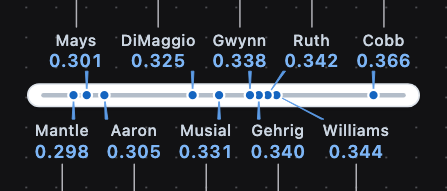
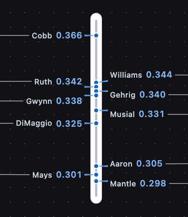
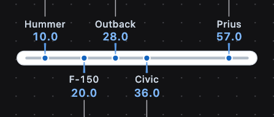
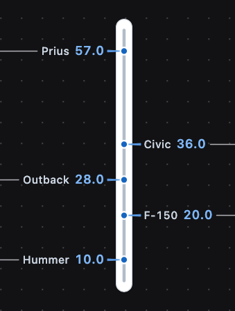
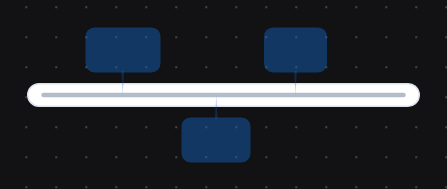
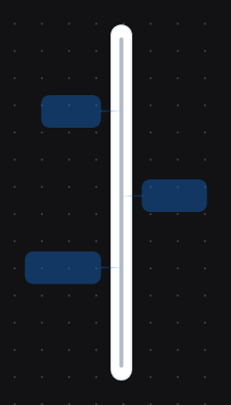
What it is. Each value has two tabs: its name on one side of the axis and its number on the other side.
Why. A vertical bar reads as a ranked table. Names and numbers each line up.
Trade-off. The two sides no longer hold different values, so every edge arrives on one side. Ten values need a long bar. Each dot has two points, which is busy when values are close.
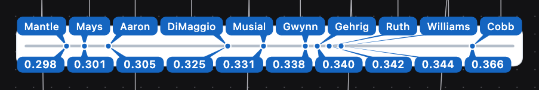
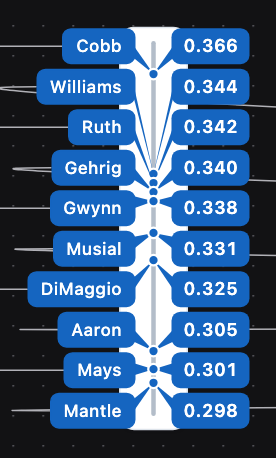
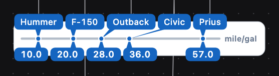
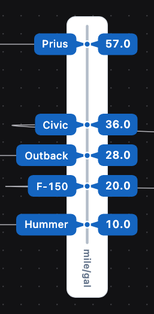
What it is. The nearest to the bar before this work. White tabs with a blue outline. The name, the number, and the unit are on one line in both orientations.
Why. The tabs are low, so a horizontal bar is not tall.
Trade-off. The tabs are wide. Ten values make a horizontal bar very long, and the unit repeats on every tab. A white tab is hard to see on the white node.
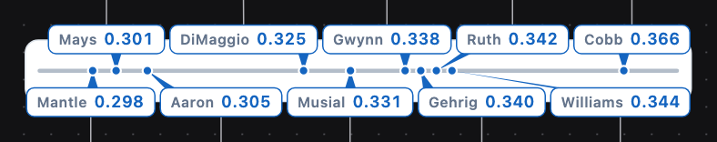
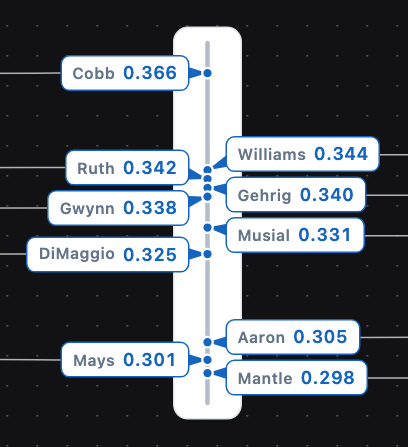
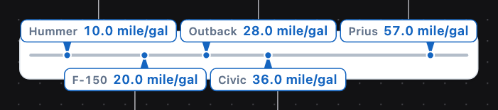
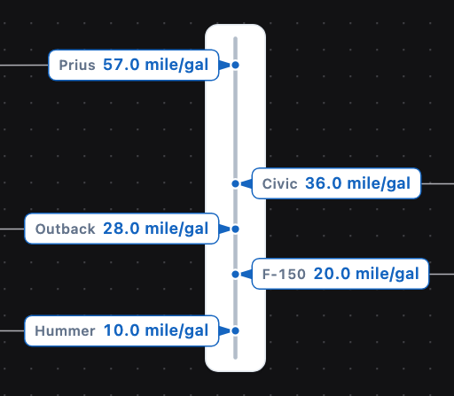
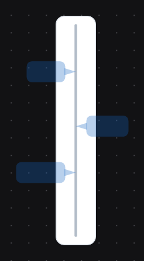